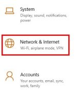
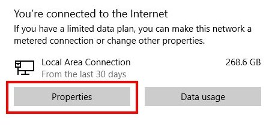
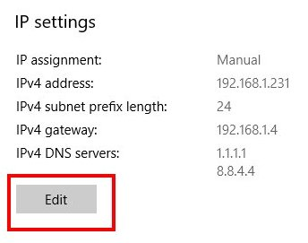
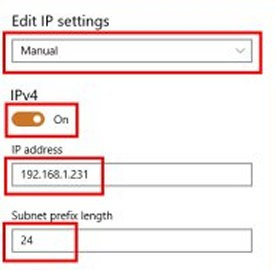

Recovery GUI
Flashing a Router using the Recovery GUI
On many routers you can not flash the ROOter firmware using the factory GUI. The factory firmware will not accept the ROOter firmware as vaild so you have to find other ways to do the flashing. One of these is the Recovery GUI.
As we talked about on the All About Routers page, many routers have what is known as a Recovery GUI built into their bootloader. This gives you a web based method of flashing the router that doesn't depend on the factory firmware.
While different routers have different versions of the Recovery GUI, they all work the same way.
- Connect your computer to the router's LAN port using an Ethernet cable.
- Power up the router while holding in the reset button.
- After a certain amount of time release the button.
- Use your browser to go to the Recovery web page.
- Upload the new firmware and flash the router using this web page.
Computer Static IP Address
The one thing that all Recovery GUI have in common is they don't run a DHCP server. This means they will not give your computer an IP Address so you will be unable to access the Recovery web page until you set your computer to have a Static IP Address. Let's look at how to do that on Windows.
First you need to know what IP Address to use for the computer. Almost all Recovery web pages are at 192.168.1.1 so you can set the computer to 192.168.1.2 or any other address in the .1. subnet (192.168.1.10, 192.168.1.100, etc).
Press the Windows key + I combination. In the ensuing dialog box select the Network and Internet tile.

In the following Status dialog click on the Properties button.

In the next dialog scroll down to the IP Settings section and click on the Edit button.

The Edit IP settings dialog will appear. Do the following.
- Set the mode to Manual.
- Make sure IPv4 is On.
- Set the IP Address to 192.168.1.2 or whatever IP Address you chose.
- Set the Subnet Prefix length to 24.

Click on the Save button. Your computer now has a static IP Address of 192.168.1.2.
To set your computer back to Automatic IP Address simply select the Automatic mode in the Edit IP settings dialog. You will want to do this when you have completed flashing the router.
Getting to the Recovery Web Page
With the computer set up so it can access the Recovery web page by giving it a Static IP Address, we are ready to force the router into running a web server so we have a web page to access. Even if you don't know if the router's bootloader has a Recovery GUI the following will allow you to find out.
Unplug the router's power and connect an Ethernet cable from one of it's LAN ports to your computer.
Hold in the reset button on the router. This is usually inside a small hole near the power socket but may be elsewhere on the panel.

Using a dull pencil works quite well in most cases although some routers have a very small hole. Be careful using something sharp when doing this as the button is plactic and can be damaged. Then plug in the router's power. Doing this can require 3 hands to hold and manipulate things so an easier way is to plug the router's power pack ito a switched power strip. Using the switch on that is much easier than plugging in a power jack while still holding the reset button in.
So keep holding in the reset button and power on the router. Keep holding in the reset button. If it slips then power off the router and try again.
The next questions is, how long do you hold in the reset button before releasing it? The answer is, it varies. For most routers you only need to hold it for at most 10 seconds but some routers are much more time critical. While the router is powering up the LEDs will flash and go on and off in some sort of pattern which is the same every time you do this. With many routers there is no set time that you have to hold in the button except for a minimum time. But some have a very narrow window in which the button must be released. This depends on what bootloader the router uses.
In general you can assume that the button is held in for 10 seconds and then released. Then you can use your browser to go to http://192.168.1.1/index.html to access the Recovery web page. But what about those routers that are time critical? How do you know when to release the button? The following table lists some of the more common time critical router models that have a Recovery GUI.
| Router Model | LED Action |
Notes |
|---|---|---|
| Gl.iNet GL-Mifi | Power LED will light up. Other LEDS will flash 6 times and the LTE light will faintly flash twice. Release button at this point. |
|
| Gl.iNet GL-AR150 GL-AR300M GL-AR750 GL-AR750S GL-X750 GL-MT300N-V2 GL-E750 | Power LED will light up. Other LEDS will flash 5 times. Release button at this point. |
|
| Gl.iNet GL-MT300N GL-MT300A | Power LED will light up. Other LEDS will flash 3 times. Release button at this point. |
|
| Gl.iNet GL-S1300 GL-B1300 | Leftmost LED will light up. The rightmost LED flashes 4 times, then the middle LED turns on and stays on. Release button at this point. |
|
| Gl.iNet older GL-B1300 | Leftmost LED will light up. Both the middle LED and the rightmost LED flash 5 times at the same time then they stay on. Release button at this point. |
|
| Gl.iNet GL-MT1300 | Power LED will light up. The LED is blue at first, flash twice slowly, then 5 times a bit quicker and turn to white and stay on. Release button at this point. |
|
| ZBT WE826-Q | Power LED will light up. WAN and LAN1 LED will flash twice. Release button after this. |
Flashing must be complete by 4.5 minutes after power on or router will reboot. |
Once you have released the reset button you can use your browser to got to http://192.168.1.1/index.html to access the Recovery web page. If your router has a Recovery GUI you will see a web page that allows flashing the router. On a time sensitive router you may need to do this procedure several times to get the correct point to release the reset button. If you can't get a Recovery web page then the router probably doesn't have one.
When you access the Recovery web page you will be greeted by one of several different pages depending on the bootloader used in the router. Some are very simple, others are more complex. Some are in English and some are in Chinese. Let's look at some of the different Recovery web pages and see what needs to be done to flash the router.
Flashing the Router from the Recovery Web Page
At this point we have finally arrived at the Recovery GUI web page. Now what? Each bootloader has it's own version of the web page so we will look at a few and show what you need to do to flash the router.
The Simple English Web Page
Some Recovery web pages are very simple and all you have to do is click a button to find and upload the new firmware file and then click another button to flash the router.

The Simple Chinese Web Page
Many of the Recovery GUI web pages are in Chinese so you need to know what to do in order to navigate them. This web page, used by ZBT on a number of routers, is quite simple once you know how.

Click on the button and select your firmware file in the ensuing dialog box. A confirmation dialog box will then appear.

Click on the OK button to flash the firmware. A progess page will appear and show the flashing.
The Complex Chinese Web Page
Some Recovery GUI web pages can be very intimidating, especially if they are in Chinese. The Breed bootloader has one of these.

Click on the indicated button and you will go to the web page used for flashing.

Check the indicated box, use the Browse button to search for your firmware file and then click on the Flash button. You will then receive a confirmation dialog. Click on the button to flash the firmware.

A progress page will appear so you know the status of the flashing.
Some Notes about Flashing
Each router has it's own quirks when it comes to flashing them using the Recovery GUI. We will look at some of these to, hopefully, make it easier to flash them.
- Not every router has a Recovery GUI. If you are unsure about this then try the procedure for getting access to the Recovery web page and then check if it exists. You may want to try several times and watch the Leds while you are doing this. They will have a pattern they follow every time and you may see what that is. Generally, the LEDs will flash when the reset button should be held down.
- Gl.iNet routers are very picky about when you release the reset button. The window that takes place in is very short and you may need to repeat the procedure several times before you get it right.
- The ZBT WE826-Q is very sensitive to the amount of time you have to flash the firmware. It is not sensitive to when you release the reset button but the amount of time after you power up the router until the flash is completed is. You have about 4.5 minutes from power up until the router reboots. If the flashing has not completed by that time it will be ruined and you will have to do the procedure all over again. For this reason it is important to go through the flashing procedure quickly so there is enough time for the flash to complete before the reboot occurs. This means you must know exactly where the firmware file is located so you can browse to it quickly and, since this router used the complex Breed bootloader, you must know the steps needed to start the flash. Because of this it may take several tries to successfully flash this router.